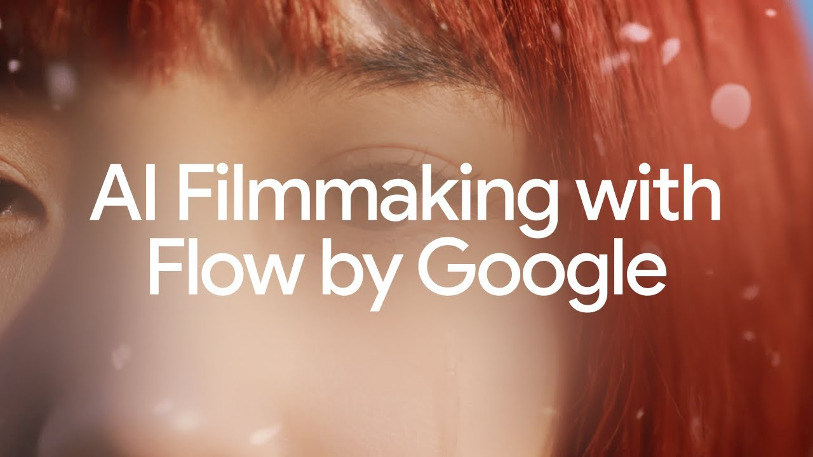
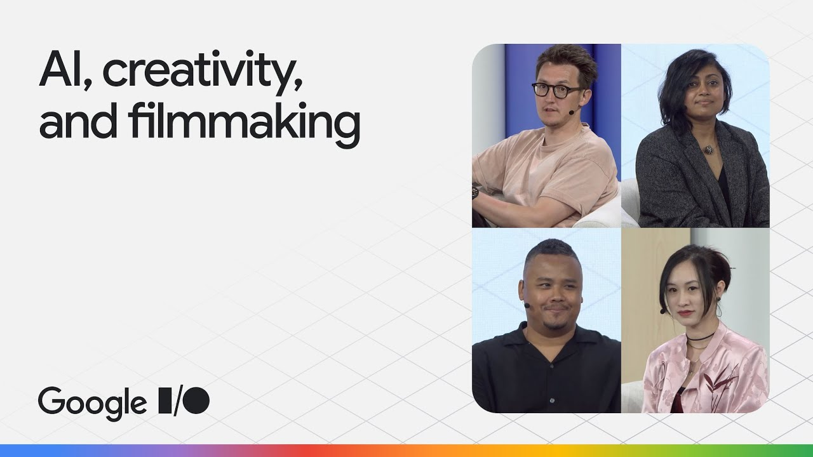
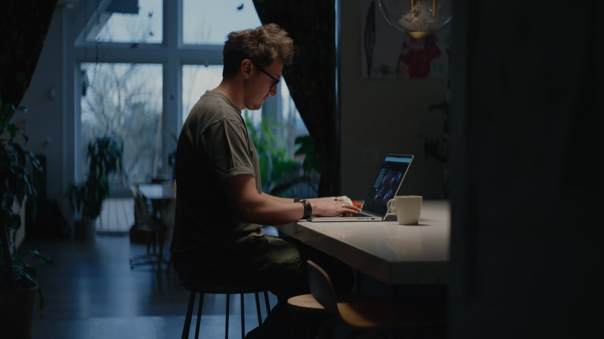
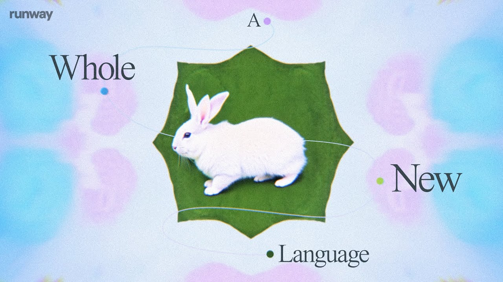

012025.06.24Google · Tribeca Film FestivalYouTube ↗
Interviews, features and reports.
articles
Talks, panels and interviews.

012025.06.24Google · Tribeca Film FestivalYouTube ↗

022025.05.22Google I/O 2025YouTube ↗

032025.05.20GoogleYouTube ↗
042024.10.04Civitai Creator SessionYouTube ↗

052024.09.03RunwayYouTube ↗